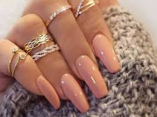
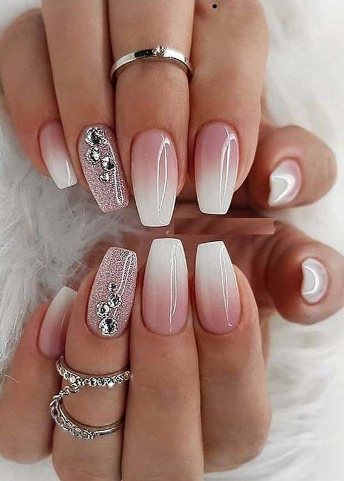
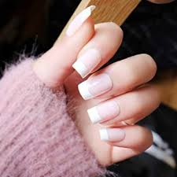
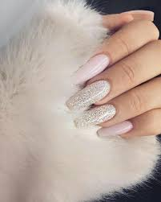
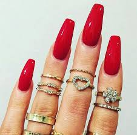

Las uñas acrílicas son las más utilizadas, por su durabilidad, comodidad y firmeza.
Si estás buscando que tus uñas postizas se vean naturales, esta será tu mejor opción
Similares a las uñas de acrílico, que tienen la apariencia de una manicura francesa
Las uñas esculpidas son la forma más duradera de uñas artificiales, pero requieren trabajarse regularmente para conservar su naturalidad
Las uñas de porcelana se ven parecidas a las de acrílico
